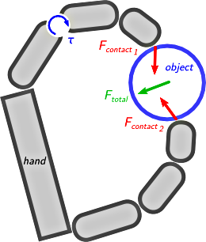

Control
Most control schemes of multifingered dextrous manipulation work along these lines:
- First they compute the force and moment that would move the object as desired.
- Then they compute contact forces whose resultant is this force and this moment.
- Finally they compute motor torques that make the fingers apply these contact forces.
In short: desired motion → desired Ftotal → desired Fcontact → control torques τ.
The first and last steps above are relatively simple: they just require using the equations of motion of the object and the dynamic model of the robot hand. The second step is more interesting. It requires solving for Fcontact in the following matrix equation:
G Fcontact = Ftotal
where Fcontact is the column vector of the contact forces Fcontact 1, …, Fcontact n, Ftotal is the desired resultant wrench (a force and a moment), and G is a particular matrix called the grasp matrix (which sums the contact forces into the resultant wrench, as the equation says). Of course, the general solution of this equation is the sum of a particular solution and the homogeneous solution:
Fcontact = G+ Ftotal + ker G
where G+ is the pseudo-inverse of the grasp matrix and ker G is its nullspace (kernel). This decomposition of the contact forces can be found in most approaches of manipulation control. The two components of the decomposition are sets of forces called, respectively, the pseudo-inverse solution and the internal forces.
- The pseudo-inverse solution is a particular solution of the equation, so its resultant is Ftotal, so it produces the desired object motion.
- The internal forces are in the nullspace of the grasp matrix, so their resultant is null, so they don't produce any object motion.
It is important to note that neither the pseudo-inverse solution nor the internal forces are necessarily contact forces: they might be out of the contact cones. But their sum must be contact forces, because robotic fingers can't apply forces that aren't consistent with physical reality. Hence the importance of internal forces: control schemes use them to correct the pseudo-inverse solution back into the contact cones, if necessary.
Fcontact = G+ Ftotal
Fcontact = G+ Ftotal + Fint
More generally, control schemes use internal forces to take into account other constraints and control objectives than the physical consistency of the contact forces. Among them, for instance, non-sliding of the contacts, tightening of the object, and motor limits in the fingers.
The problem is that this approach cannot account for the fact that some of these constraints and control objectives are actually more important than the motion of the object. Indeed, since internal forces are in the nullspace of the grasp matrix, they affect the contact forces without changing their resultant. Therefore the motion of the object remains the same whatever the choice of internal forces. In other words, the motion of the object is hierarchically higher than all the constraints and control objectives taken into account with internal forces. Yet it shouldn't be: although it makes sense that object motion be a high-priority objective in manipulation control, motor limits and physical consistency of the contact forces should be of higher priority.
To avoid this problem, we propose a control scheme where the contact forces are not broken into a pseudo-inverse solution and internal forces, and where the various constraints and objectives are put in a better priority order. This new control scheme is based on mathematical programming (constrained optimization), a convenient way of sorting things in order of priority:
- The constraints and control objectives that must be met no matter what, such as the physical consistency of the contact forces, are used to form the constraints of an optimization process.
- The control objectives that should be met as much as possible, such as the motion of the object, form the optimization criteria used in the cost function.
More precisely, here is our choice of constraints and criteria:
- Constraints
- Hand dynamics, friction constraints (contact cones), motor limits, joint limits. They are all linear (or can be linearized) in the following unknowns: the control torques τ, the joint accelerations q̈, and the contact forces Fcontact.
- Criteria
- Object motion, object tightening (see the section about disturbances for more about tightening), non-sliding of contacts, minimality of motor torques, coupling between the joint positions of the last two phalanges of each finger. They are all quadratic in the same unknowns. Each criteria is given a weight representing its priority; then they are all combined into a quadratic cost function.
Taken together, the constraints and the cost function form a constrained quadratic programming problem (QP):
min y ½ yT Q y + yT r
Aeq y + beq = 0
Aneq y + bneq ≤ 0
with y being the column vector of the unknowns τ, q̈, Fcontact. Solving this optimization problem at each time step of the robot hand's control loop provides us with the control torques τ.